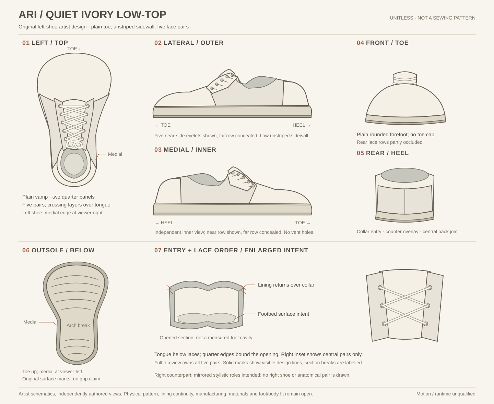

Ari • ivory low-top in 3D
First editable artist model of one left shoe, guided by the retained drawing. Newly authored depth and interior; unitless and unfitted. Physical construction, paired-foot fit, motion and complete-character quality remain open.
Editable OBJ · Material groups · Complete mesh data · Design decisions and limits
Awaiting independently reviewed source, data and render admission.
The retained drawing
Unchanged independent schematics. This new 3D form is an authored interpretation, with no measured last or registered reconstruction.

Evidence record
No render has run.